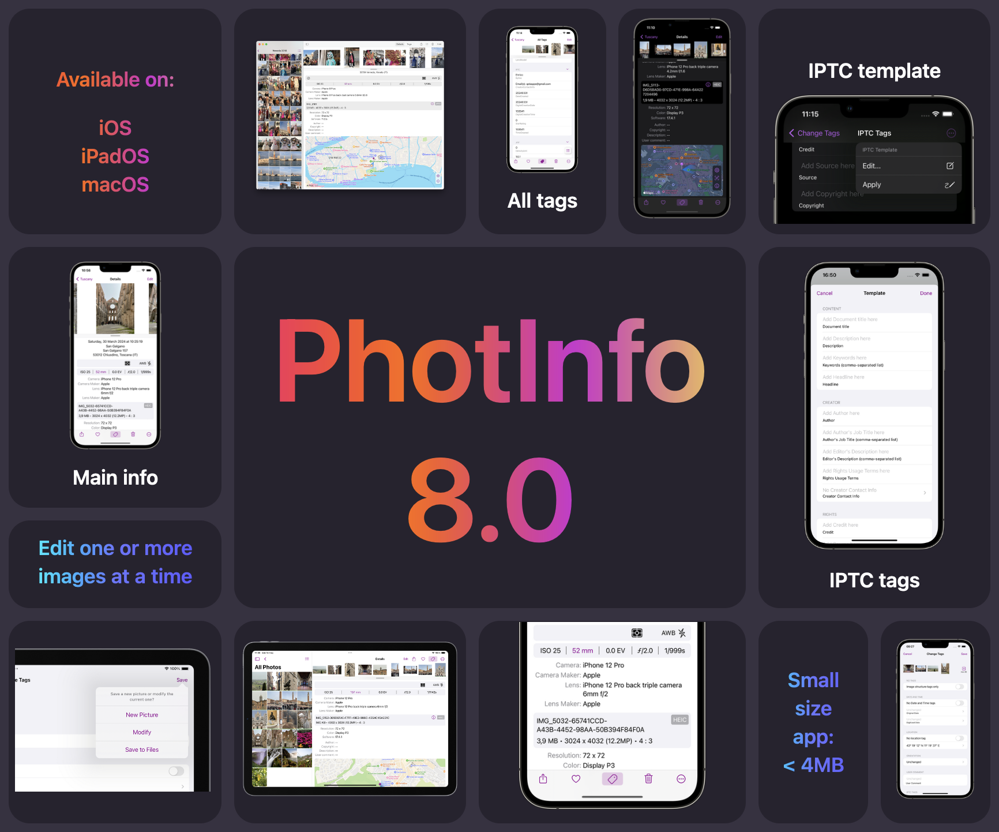

PhotInfo 8.0 - Press Kit

PhotInfo is an app to control all the information (location, date, camera, focal length, etc.) contained in your photos.
At the bottom of this page: links for downloading screenshots, video, hi-res icon and this text.
Why PhotInfo
Digital cameras (including those in mobile devices) add metadata to the photos they take. These data are called Exif tags. They provide the opportunity to know not only the exact date and time of the shot, but also parameters such as exposure time, shutter speed, image resolution, device model, ISO, focal length, etc.
With PhotInfo you can access images in your iPhone, iPad or Mac and view all of their metadata, delete these metadata or edit the main ones.
You can delete/edit image tags to protect your privacy before sharing the image; you can add GPS data if you had forgotten to turn on location services when you took the picture; you could joke by setting improbable location values; you can reset date or location deleted by a previous change; you can...
A user wrote me that she uses the app in a photography class she teaches in California; another user wrote about using the app to figure out which settings make some pictures better than others and to improve his photography technique.
What makes this app unique
- the completeness of tags shown
- the possibility to see the tags in raw format or in a more human readable one
- the convenient navigation between photos and albums
- the toolbar: it allows the user to favorite or delete a photo, share it or its metadata
- the IPTC metadata editor with a template
- PhotInfo is on the App Store since 2013, continuosly updated and developed
- PhotInfo leaves space to your photos, it's less then 4MB on your device
Features
With PhotInfo you can:
- view all the tags (Exif, Tiff, IPTC, etc.) from a picture: in raw or in human readable format
- display an image with the main tags and the map of the location in a single view
- share an image with or without tags
- copy the key data or the content of individual tags
- share all the tags in raw or in human readable format or as a JSON
- create a copy of the image or modifying its tags for:
- the place (you can get it from another picture, from a map, from your current position or by searching for it)
- the date and time the photo was taken (using a calendar or from another picture)
- the orientation
- the author (the artist)
- the copyright
- the image description
- main camera tags
- main IPTC tags
- modify IPTC tags using values saved in a template
- create a copy of the image with the minimum content of info in the tags (related to image data structure, such as the image size, resolution and orientation)
- editing a batch of photos
- see where the photo was taken, in different ways (map, address, coordinate)
- favorite or delete a photo
- quickly scroll through the albums of your iOS device
- look at different pictures in burst photos (iOS only)
- see and share associated files: such as original image for edited photos or video for live ones
- view the tags directly from other apps with the PhotInfo's Extension
PhotInfo app is in constant development, so new features will be added soon. Download now and stay tuned!
A bit of history
8.0: Refreshed UI + IPTC tags
Version 8 adds the possibility to edit many IPTC tags and to use a template for them. The UI is updated again: now with settings in the views they affect. Moreover, the app is quicker and smaller.
7.0: New UI
A new and simpler UI arrives in version 7.0: map and details views join in one; the toolbar moves to the bottom on iPhone and to the top on iPad and Mac.
6.50: Multi Edit
It is (finally) possible to edit more than one photo at a time. This has been a long-awaited request by the user community to save a lot of time in multiple editing.
6.10: On the Mac
With version 6.10, PhotInfo arrives on the Mac. The UI is tweaked for the Mac, but he app works like on iPhone/iPad: it only accesses the pictures in your Photos Library (the ones you see in the native Photos app). PhotInfo for Mac shows all the tags contained in these images and let you modifying the main tags.
If you buy PhotInfo on one platform you can download the app on the other platforms for free.
6.00: A complete rewrite
After about 7 years on the store, PhotInfo needed a complete rewrite to keep up with the continuous evolutions of iOS, so the app has been rewritten from Objective C to Swift.
Between PhotInfo 5.00 and 6.00 I wrote PhotInfo NG from scratch, catching up with the PhotInfo's features. Reached the feature parity, PhotInfo switched to the NG code.
February 2013: 1.00
PhotInfo was published on the App Store for the first time on 7h February 2013.
Links
| Screenshots | iPhone 15 Pro Max |
| iPhone 8 Plus | |
| iPad 12.9 6th gen | |
| iPad 12.9 2nd gen | |
| on Mac | |
| Icon | Hi-Res icon |
| Site | PhotInfo |
| Privacy Policy |
{kind=link}
 App Store
App Store
Requirements
iOS 16.0, iPadOS 16.0, macOS 13.0 (Ventura) or later.Contact
For any questions or to request a promo code email me at qebapps@gmail.com.You can find the latest news about PhotInfo on this page or on X.
